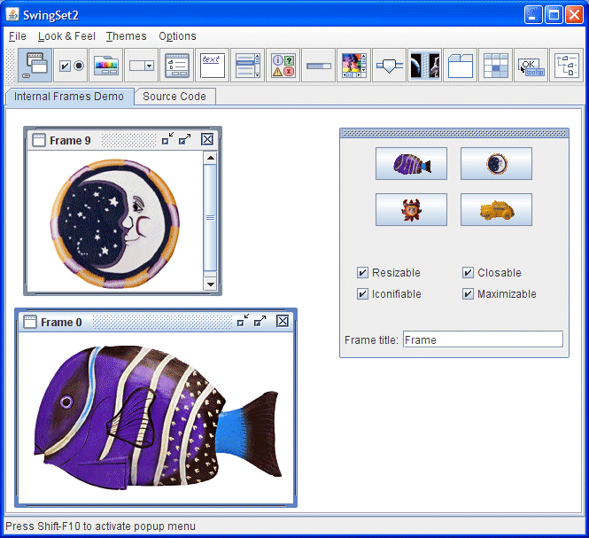
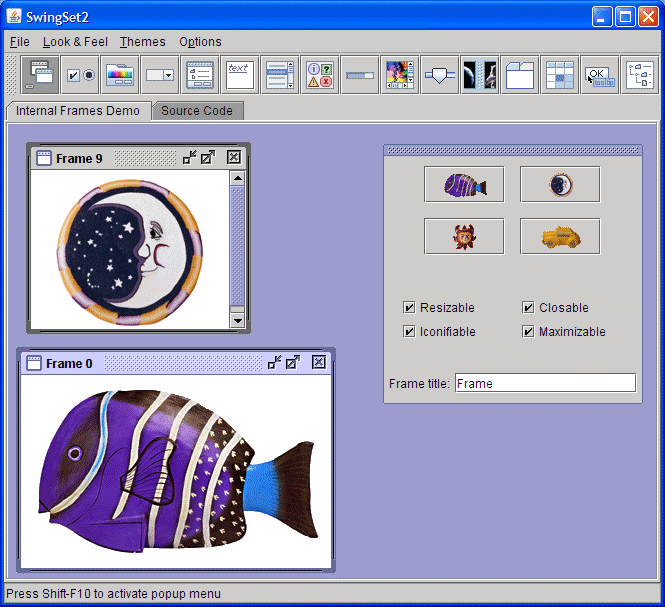

La arquitectura de Swing está diseñada de forma que pueda cambiar el "aspecto" (L&F) del IGU de
su aplicación (vea
Una Visión General a la Arquitectura Swing). El "Aspecto" se refiera a la apariencia de los
controles visuales del IGU (más formalmente, los JComponents) y "sensación" se
refiere a la forma en que se comportan los controles visuales.
La arquitectura de Swing habilita múltiples L&Fs separando cada componente en dos clases distintas: una
subclase JComponent y una subclase ComponentUI correspondiente. Por ejemplo, cada
instancia de JList tiene una implementación concreta de ListUI (ListUI
extiende ComponentUI). La subclase ComponentUI recibe varios nombres en la
documentación de Swing: "IU", "IU del componente", "delegado IU" y "delegado de aspecto" se utilizan para
identificar la subclaseComponentUI.
La mayoría de los desarrolladores nunca necesitan interactuar con el delegado IU directamente. En su mayor
parte, el delegado IU es utilizado internamente por la subclase JComponent para la funcionalidad
crucial, con métodos de cobertura proporcionados por la subclase JComponent para todos los accesos
al delegado IU. Por ejemplo, todo el pintado en las subclases JComponent es delegado al delegado
IU. Al delegar el pintado, el 'aspecto' puede variar dependiendo del Aspecto.
Es responsabilidad de cada Aspecto suministrar una implementación concreta para cada una de las subclases
ComponentUI definidas por Swing. Por ejemplo, el Aspecto Java (Java Look And Feel, en
inglés crea una instancia de MetalTabbedPaneUI para suministrar el Aspecto de
JTabbedPane. Swing maneja la creación real del delegado UI por usted — en su mayor parte,
nunca necesitará interactuar directamente con el delegado de UI.
El resto de esta sección describe los siguientes temas:
El EEJ (Entorno de Ejecución Java, JRE o Java Runtime Environment en inglés) de Sun suministra los siguientes Aspectos o L&Fs:
CrossPlatformLookAndFeel — este es el "Aspecto Java" (también llamado "Metal") que
tiene el mismo aspecto en todas las plataformas. Es parte de la IPA de Java
(javax.swing.plaf.metal) y es el aspecto predeterminado que será usado si no hace nada en
su código para establecer un Aspecto o Aspecto diferente.
SystemLookAndFeel — aquí, la aplicación usa el Aspecto que es nativo al sistema en
el que se está ejecutando. El Aspecto System se determina en tiempo de ejecución, donde la aplicación
le pide al sistema que le devuelva el nombre del Aspecto apropiado.
Synth — la base para crear su propio aspecto con un fichero XML.
Multiplexing — una forma de hacer que los métodos del IU deleguen en varias implementaciones diferentes de aspecto al mismo tiempo.
Para Linux y Solaris, el Aspecto System es "GTK+" si GTK+ 2.2 o superior está instalada, "Motif" de lo contrario. Para Windows, el Aspecto System es "Windows" el cual imita el Aspecto del SO Windows particular que se está ejecutando — Windows clásico, XP, o Vista. Los Aspectos GTK+, Motif, y Windows son suministrados por Sun y enviados junto con el KDJ (Kit de Desarrollo de Java, JDK o Java Development Kit, en inglés) y EEJ de Java, aunque no forman parte de la IPA de Java.
Apple suministra su propia MVJ (Máquina Virtual de Java, JVM o Java Virtual Machine, en inglés) que incluye su Aspecto propietario.
En resumen, cuando usa el SystemLookAndFeel, esto es lo que verá:
| Platforma | Aspecto |
|---|---|
| Solaris, Linux con GTK+ 2.2 o posterior | GTK+ |
| Otros Solaris, Linux | Motif |
| IBM UNIX | IBM* |
| HP UX | HP* |
| Windows Clásico | Windows |
| Windows XP | Windows XP |
| Windows Vista | Windows Vista |
| Macintosh | Macintosh* |
* Suministrado por el proveedor del sistema.
Usted no ve el Aspecto System en la IPA. Los paquetes GTK+, Motif, y Windows que se requieren son enviados junto con el KDJ de Java como:
com.sun.java.swing.plaf.gtk.GTKLookAndFeel
com.sun.java.swing.plaf.motif.MotifLookAndFeel
com.sun.java.swing.plaf.windows.WindowsLookAndFeel
Tenga en cuenta que la ruta incluye java, y no javax.
Todos los Aspecto de Sun tienen una gran cantidad de elementos comunes. Estos elementos comunes están definidos
en el aspecto Basic en la IPA (javax.swing.plaf.basic). Los Aspectos Motif y Windows
están construidas extendiendo las clases IU delegadas en javax.swing.plaf.basic (un Aspecto
personalizado puede ser construído haciendo lo mismo). El Aspecto "Basic" no se usa sin ser extendido.
En la IPA usted verá cuatro paquetes de Aspecto:
javax.swing.plaf.basic — Delegados IU básicos para ser extendidos cuando se crea un
Aspecto personalizado.
javax.swing.plaf.metal — El Aspecto Java, también conocido como el Aspecto
CrossPlatform ("Metal" fue el nombre del proyecto en Sun para este Aspecto) El actual "tema" por
defecto (descrito abajo) para este Aspecto es "Ocean", así que es a menudo referido como el Aspecto
Ocean.
javax.swing.plaf.multi — una apariencia de multiplexación que permite que los
métodos IU deleguen en varias implementaciones de apariencia al mismo tiempo. Puede ser usado para
aumentar el comportamiento de un aspecto particular, por ejemplo con un Aspecto que proporciona pistas
de audio sobre el Aspecto Windows. Esta es una forma de crear una apariencia accesible para
discapacitados.
javax.swing.plaf.synth — un Aspecto facilmente configurado usando ficheros XML
(descrito en la siguiente sección de esta lección).
No está limitado a los Aspectos que se suministran con la plataforma Java. Puede usar cualquier Aspecto que esté en la ruta de clases de su programa. Los Aspectos externos son usualmente proporcionados en uno o más ficheros JAR que usted añade a la ruta de clases de su programa en tiempo de ejecución. Por ejemplo:
java -classpath .;C:\java\lafdir\customlaf.jar YourSwingApplication
Una vez un Aspecto externo está en el camino de clases de su programa, su programa puede usarlo como cualquiera de los Aspectos empaquetados con la plataforma Java.
El Aspecto que los componentes de Swing usan es especificado a través de la clase UIManager en el
paquete javax.swing. Cada vez que se crea un componente Swing, el componente solicita al
administrador IU el delegado IU que implementa el Aspecto del componente. Por ejemplo,
cada constructor de JLabel pregunta al administrador IU por el objeto delegado IU apropiado para
la etiqueta. Después usa ese objeto delegado IU para implementar todo el pintado y gestión de eventos.
Para especificar mediante programación un Aspecto, use el método UIManager.setLookAndFeel() con el
nombre completamente cualificado de la subclase apropiada del LookAndFeel como su argumento. Por
ejemplo, el código en negrita en el siguiente esbozo hace que el programa use el Aspecto Java multiplataforma:
public static void main(String[] args) {
try {
// Establece el Aspecto Java multiplataforma (también llamado "Metal")
UIManager.setLookAndFeel(
UIManager.getCrossPlatformLookAndFeelClassName());
}
catch (UnsupportedLookAndFeelException e) {
// maneja la excepción
}
catch (ClassNotFoundException e) {
// maneja la excepción
}
catch (InstantiationException e) {
// maneja la excepción
}
catch (IllegalAccessException e) {
// maneja la excepción
}
new SwingApplication(); //Crea y muestra el IGU.
}
Alternativamente, este código hace que el programa use el Aspecto System:
public static void main(String[] args) {
try {
// Establece el Aspecto System
UIManager.setLookAndFeel(
UIManager.getSystemLookAndFeelClassName());
}
catch (UnsupportedLookAndFeelException e) {
// maneja la excepción
}
catch (ClassNotFoundException e) {
// maneja la excepción
}
catch (InstantiationException e) {
// maneja la excepción
}
catch (IllegalAccessException e) {
// maneja la excepción
}
new SwingApplication(); //Crea y muestra el IGU.
}
Puede también usar el nombre de clase real de un Aspecto como el argumento a
UIManager.setLookAndFeel(). Por ejemplo,
// Establece el Aspecto Java multiplataforma (llamado también "Metal")
UIManager.setLookAndFeel("javax.swing.plaf.metal.MetalLookAndFeel");
o
// Establece el Aspecto Motif en cualquier plataforma
UIManager.setLookAndFeel("com.sun.java.swing.plaf.motif.MotifLookAndFeel");
No está limitado a los argumentos precedentes. Puede especificar el nombre de cualquier Aspecto que esté en la ruta de clases de su programa.
Puede especificar el Aspecto en la línea de comandos usando la bandera -D para establecer la
propiedad swing.defaultlaf. Por ejemplo:
java -Dswing.defaultlaf=com.sun.java.swing.plaf.gtk.GTKLookAndFeel MyApp
java -Dswing.defaultlaf=com.sun.java.swing.plaf.windows.WindowsLookAndFeel MyApp
Otra forma de especificar el Aspecto actual es usar el fichero swing.properties para establecer
la propiedad swing.defaultlaf property. Este fichero, el cual necesita crear, está ubicado en el
directorio lib de la versión de Sun de Java (otros vendedores de Java pueden usar una ubicación
diferente). Por ejemplo, si está usando el interprete de Java en javaHomeDirectory\bin,
entonces el fichero swing.properties (si existe) está en
javaHomeDirectory\lib. Aquí tiene un ejmeplo de los contenidos de un fichero
swing.properties:
# Swing properties
swing.defaultlaf=com.sun.java.swing.plaf.windows.WindowsLookAndFeel
Aquí tiene los pasos que determinan la apariencia que sucede cuando el gestor de IU necesita establecer un Aspecto:
swing.defaultlaf. Si la propiedad está especificada tanto en el
fichero swing.properties y en la línea de comandos, la definición en línea de
comandos toma precedencia.
Puede cambiar el Aspecto con setLookAndFeel incluso después de que el IGU del programa sea
visible. Para hacer que los componentes existentes reflejen el nuevo Aspecto, invoque el método
updateComponentTreeUI de SwingUtilities una ve por cada contenedor de nivel superior.
Luego tal vez desee redimensionar cada contenedor de nivel superior para reflejar los nuevos tamaños de los
componentes que contienen. Por ejemplo:
UIManager.setLookAndFeel(lnfName);
SwingUtilities.updateComponentTreeUI(frame);
frame.pack();
En el ejemplo siguiente, LookAndFeelDemo.java, puede experimentar con Aspectos diferentes. El
programa crea una IGU simple con un botón y una etiqueta. Cada vez que pulse el botón, la etiqueta se
incrementa.
Puede cambiar el Aspecto cambiando la constante LOOKANDFEEL en la línea 18. Los comentarios de las
líneas precedentes le indican qué valores son aceptables:
// Especifique el aspecto a usar definiendo la constante LOOKANDFEEL
// Los valores válidos son: null (usa el aspecto por defecto), "Metal", "System", "Motif",
// y "GTK"
final static String LOOKANDFEEL = "Motif";
Aquí la constante está establecida en "Motif", el cual es un Aspecto que se ejecutará en cualquier plataforma (como será el predeterminado, "Metal"). "GTK+" no se ejecutará en Windows, y "Windows" se ejecutará sólo en Windows. Si elije un Aspecto que no se ejecutará, obtendrá el Aspecto Java o Metal.
En la sección del código donde el Aspecto en realidad está configurado, verá diferentes formas de establecerlo, como se describió anteriormente:
if (LOOKANDFEEL.equals("Metal")) {
lookAndFeel = UIManager.getCrossPlatformLookAndFeelClassName();
// una forma alternativa de establecer el Aspecto Metal es reemplazar la línea previa con:
// lookAndFeel = "javax.swing.plaf.metal.MetalLookAndFeel";
Puede verificar que ambos argumentos funcionan al comentar/descomentar las dos alternativas.
Aquí tiene un listado del fichero fuente
LookAndFeelDemo
:
package lookandfeel;
import javax.swing.*;
import java.awt.*;
import java.awt.event.*;
import javax.swing.plaf.metal.*;
public class LookAndFeelDemo implements ActionListener {
private static String labelPrefix = "Number of button clicks: ";
private int numClicks = 0;
final JLabel label = new JLabel(labelPrefix + "0 ");
// Especifique el aspecto a usar definiendo la constante LOOKANDFEEL
// Los valores válidos son: null (usa el predeterminado), "Metal", "System", "Motif",
// y "GTK"
final static String LOOKANDFEEL = "Metal";
// Si elije el Aspecto Metal, puede también elegir un tema.
// Especifique el tema a usar definiendo la constante THEME
// Los valores válidos son: "DefaultMetal", "Ocean", y "Test"
final static String THEME = "Test";
public Component createComponents() {
JButton button = new JButton("¡Soy un botón de Swing!");
button.setMnemonic(KeyEvent.VK_I);
button.addActionListener(this);
label.setLabelFor(button);
JPanel pane = new JPanel(new GridLayout(0, 1));
pane.add(button);
pane.add(label);
pane.setBorder(BorderFactory.createEmptyBorder(
30, //arriba
30, //izquierda
10, //abajo
30) //derecha
);
return pane;
}
public void actionPerformed(ActionEvent e) {
numClicks++;
label.setText(labelPrefix + numClicks);
}
private static void initLookAndFeel() {
String lookAndFeel = null;
if (LOOKANDFEEL != null) {
if (LOOKANDFEEL.equals("Metal")) {
lookAndFeel = UIManager.getCrossPlatformLookAndFeelClassName();
// una forma alternativa de establecer el Aspecto Metal es reemplazar la
// línea previa con :
// lookAndFeel = "javax.swing.plaf.metal.MetalLookAndFeel";
}
else if (LOOKANDFEEL.equals("System")) {
lookAndFeel = UIManager.getSystemLookAndFeelClassName();
}
else if (LOOKANDFEEL.equals("Motif")) {
lookAndFeel = "com.sun.java.swing.plaf.motif.MotifLookAndFeel";
}
else if (LOOKANDFEEL.equals("GTK")) {
lookAndFeel = "com.sun.java.swing.plaf.gtk.GTKLookAndFeel";
}
else {
System.err.println("Unexpected value of LOOKANDFEEL specified: "
+ LOOKANDFEEL);
lookAndFeel = UIManager.getCrossPlatformLookAndFeelClassName();
}
try {
UIManager.setLookAndFeel(lookAndFeel);
// Si Aspecto = "Metal", establece el tema
if (LOOKANDFEEL.equals("Metal")) {
if (THEME.equals("DefaultMetal"))
MetalLookAndFeel.setCurrentTheme(new DefaultMetalTheme());
else if (THEME.equals("Ocean"))
MetalLookAndFeel.setCurrentTheme(new OceanTheme());
else
MetalLookAndFeel.setCurrentTheme(new TestTheme());
UIManager.setLookAndFeel(new MetalLookAndFeel());
}
}
catch (ClassNotFoundException e) {
System.err.println("No se pudo encontrar la clase para el aspecto especificado:"
+ lookAndFeel);
System.err.println("¿Incluyó la biblioteca Aspecto en la ruta de clases?");
System.err.println("Usando el aspecto predeterminado.");
}
catch (UnsupportedLookAndFeelException e) {
System.err.println("No se puede usar el Aspecto especificado("
+ lookAndFeel
+ ") en esta plataforma.");
System.err.println("Usando el aspecto predeterminado.");
}
catch (Exception e) {
System.err.println("No se pudo obtener un aspecto específico ("
+ lookAndFeel
+ "), por alguna razón.");
System.err.println("Usando el aspecto predeterminado.");
e.printStackTrace();
}
}
}
private static void createAndShowGUI() {
//Establece el aspecto.
initLookAndFeel();
//Asegúrate de tener buenas decoraciones para las ventanas.
JFrame.setDefaultLookAndFeelDecorated(true);
//Crea y configura la ventana.
JFrame frame = new JFrame("SwingApplication");
frame.setDefaultCloseOperation(JFrame.EXIT_ON_CLOSE);
LookAndFeelDemo app = new LookAndFeelDemo();
Component contents = app.createComponents();
frame.getContentPane().add(contents, BorderLayout.CENTER);
//Visualiza la ventana.
frame.pack();
frame.setVisible(true);
}
public static void main(String[] args) {
//Programa un trabajo para el hilo despachador de eventos:
//crear y mostrar el IGU de esta aplicación.
javax.swing.SwingUtilities.invokeLater(new Runnable() {
public void run() {
createAndShowGUI();
}
});
}
}
Los temas fueron introducidos como una forma de cambiar facilmente los colores y fuentes de los Aspectos
Multiplataforma Java (Metal). En el programa de ejemplo, LookAndfeelDemo.java, listado arriba,
puede cambiar el tema del Aspecto Metal estableciendo la constante THEME en la línea 23 a uno de
los tres valores:
DefaultMetal
Ocean
Test
Ocean, el cual es un poco más suave que el puro Metal, ha sido el tema por defecto para el Aspecto
Metal (Java) desde Java SE 5. A pesar de su nombre, DefaultMetal no es el tema por defecto para
Metal (lo fue antes de Java SE 5, lo que explica su nombre). El tema Test es un tema definido en
TestTheme.java
, el cual debe compilar con LookAndfeelDemo.java. Como está escrito,
TestTheme.java establece los tres colores primarios (con resultados algo extraños). Puede modificar
TestTheme.java para probar cualquier color que le guste.
La sección del código donde el tema es establecido se encuentra al principio de la línea 92 de
LookAndfeelDemo.java. Tenga en cuenta que debe usar el Aspecto Metal para establecer un tema.
if (LOOKANDFEEL.equals("Metal")) {
if (THEME.equals("DefaultMetal"))
MetalLookAndFeel.setCurrentTheme(new DefaultMetalTheme());
else if (THEME.equals("Ocean"))
MetalLookAndFeel.setCurrentTheme(new OceanTheme());
else
MetalLookAndFeel.setCurrentTheme(new TestTheme());
UIManager.setLookAndFeel(new MetalLookAndFeel());
}
Cuando descarga el paquete de los
Ejemplos y Demostraciones del KDJ y JavaFX
y lo abre, hay una carpeta demo\jfc que contiene un programa de demostración llamado
SwingSet2. Este programa tiene una IGU gráficamente rica y le permite cambiar el Aspecto desde el
menú. Además, si está usando el Aspecto Java (Metal), puede elegir una variedad de temas diferentes. Los
ficheros para los variados temas (por ejemplo, RubyTheme.java) se encuentran en la carpeta
SwingSet2\src.
Este es el tema "Ocean", el cual es el tema por defecto para el Aspecto multi-plataforma Java (Metal):

Este es el tema "Steel", el cual fuel el tema original para el Aspecto multiplataforma Java (Metal):

Para ejecutar el programa demostración SwingSet2 en un sistema que tenga el KDJ instalado, use el
comando:
java -jar SwingSet2.jar
Esto le dará el tema por defecto del Ocean.
Para obtener el Aspecto metak, ejecuta esto:
java -Dswing.metalTheme=steel -jar SwingSet2.jar